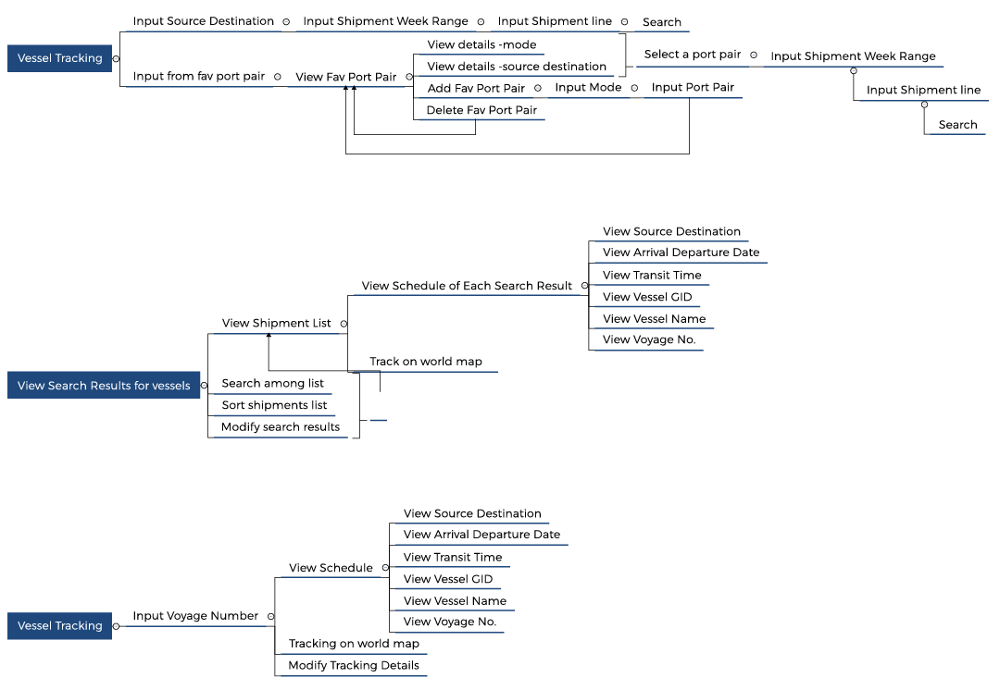

I did my summer internship at The Minimalist,a creative design and digital consultancy founded in, May, 2015. The Minimalist started off as a business to business company, mainly focusing on providing design solutions and advisory to various businesses and companies.
This article focuses on the work that I did as a User Experience design intern for one of the clients of The Minimalist i.e. Cogoport- Freight Simplified, which is globally available online freight forwarder with the most powerful network of independent freight agents all over the World. It can simply understood as ‘Flipkart for logistics’. It was an online platform for to book an intermodal freight system for transport of goods from one place to another.
My Role
My role was to assist my mentor Dhawal Goyal (Head of growth, The Minimalist) in the design of UX for the web product
for this platform (buyer side).
Initial idea of the product
Cogoport was an online platform for companies and businesses to book freight carriers for their goods to get transported from one place of the world to another – a data driven platform that has web-based and app-based solutions to provide instant rates, book and track a shipment and ultimately pay with convenience.
So it required its customers to enter the details of places from where the freight needs to be transported, the type of goods, the method transportation and various other details.
Then Cogoport searches and offers them a list shipping lines and freight carriers with average estimate of cost for booking.
When the person enters the place of loading and the place of discharge, the system figures the route that is to be taken and the intermodal freight system if needed.
Design
We started with competitor analysis from various websites like Searates, Freightos, Xenetta, Icontainers and Shipwaves and also interviewed users and the client to decide the key features of the product that are as follows.
Search
The most basic and important feature was the search feature, where customer will enter its details of port of discharge, port of loading, freight type and method of transport i.e. seaways, roadways or airways. So we designed the IA and chose best two iterations.
Iteration 1:

In the first iteration the user had to first choose the mode of transportation then enter the further details.
Iteration 2:

The second option allowed the users to first enter the point of loading and point of discharge and then they were provided with the estimated costs of all the three modes of transport i.e. FCL, LCL and air. This gave users a rough idea about the expense that each option had. On the basis of feedback we received from interviewing certain users, it was found that any industry related to Import/Export is built according to method of freight transport i.e. FCL, LCL and Air. The industry that deals in FCL would not like to trade in LCL and hence it would not like to see the rates of the other options. Hence, option 1 was chosen.
Search Listing
The following if the information architecture for the search results that system shows the user when the user has entered the details and freight mode.
Book
After viewing the rates ,if the customer feels ready to select one then this ‘book’ option allows him to book his/her shipping line for the transportation of the freight.
Favorite Port Pair
From results of user research, we also came to know that in 70% of the customers have their clients fixed for a period of 3-4 years. This brought me to a conclusion that in most of the cases the customer enter same details about the source – destination, freight type and freight amount again and again.The Favorite port pair feature allows customer to make a list of pairs of origin and destination in which he/she deals with regularly and uses it to quickly pick a port pair to search for rates.Here if the Information Architecture for the Favorite port pairs for FCL, LCL and Air (mode of transportation).
Dashboard
This feature contains various useful elements that the customer would like to visit for efficient functioning of his/her business.
Vessel Track & Schedule
This feature allows the customer to look for the schedule of shipments of various shipping lines scheduled at a specific time. It also allows the user to track the location of that shipment even if the user’s shipment is not on that carrier.
Shipment
After the customer has booked the shipment, this feature allows it to view the details, schedule, location, quotation, seller details, contact details, freight details and important document which are needed for the shipment to pass through international borders. It also allows the user to track its shipment on the world map with place of loading and place discharge in view. This requires Global positioning system web app to track the position of the shipment in real time.
Task flows & User Flow Design
After completion of design of the Information Architecture, my mentor told me about the next design step i.e. taskflow and Userflow design.
I was new to this process so I quickly google searched about it and I found that these terms didn’t had any fixed definition. What I could infer from my research and analysis from various case studies was that - Task flow is a single flow completed similarly by all users for a specific action. Ex. Sign In.
User Flow is the path a user follows through an application. They are like the journeys that user takes up to fulfill his/her requirements he/she has from the product.
I was initially a bit confused about the difference between task flow/Userflow and Information Architecture. It happened so because generally when design UX for a small website/app/product, the IA is not so vast and we end up mixing flow and architecture in a same flow chart. But when we design UX for a vast product like Cogoport then hierarchy and information availability is decided by IA and the actions that user takes to perform a required task is defined by Taskflows/ User flows. By determining this path you can see possible turns through the route and can optimize the user experience.Some key points I learned are:
1. Task flows have a singular flow, they don’t branch out.
2. The flow doesn’t have to be linear, it can branch out in a non-linear path.
3. User flows and task flows always start with a verb.
This process involves the mapping of the tasks the user has to perform to achieve his/her needs on the website. Here are some examples for the website:
Profile

Search

Vessel
 Conclusion
The Information Architecture that I build is currently now implemented in the web product of Cogoport. After working on this project I have now confidence to build any web or application platform for any company and I can easily summarize the process of building a digital product in following steps:
a) Current Product Breakdown
b) Primary User research
c) Competitor Analysis
d) Design of a Feature Dump
e) Building of Information Architecture
i. Priorities information according to the need of the user
ii. Add or remove various features and information on the basis of the data received from the user research
iii. Combine or split different chunks of information to make the platform as efficient as possible.
f) User Stories development
g) Creating Task flows
h) Persona Revisit
i) Preparation of low fidelity wireframes
j) User testing
k) Preparation of High Fidelity wireframes
l) User Testing
m) User Interface design
Unfortunately, in this I was able work only up to the building of task flows due to lack of time as the time period of my internship was over.
I learned a lot from working in a professional design firm. I also realized user research is a very important part any design project because we need to accurately know about the problem which needs to be solved. Only then the design we make will be beneficial for its users.
I also learned that Information Architecture only tells us about the hierarchy of the information whereas user stories and task flows tell us about the flow of action that user has to perform to meet his needs.